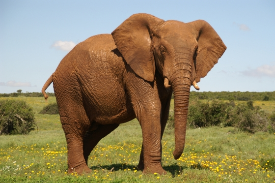

Ja Daan, je bracht Eva vroeger vaak aan het huilen,
Nu dacht je: met z’n allen naar Zuid-Afrika af te stuiten.
Maar weer vloeiden bij Eva de tranen snel,
Want jouw plannen raken haar elke keer wel.
Maar maak je geen zorgen, het komt allemaal wel goed,
Een beetje tranen horen erbij, dat geeft ons moed.
Hoewel Eva niet meegaat, wenst ze jullie een fijne reis,
Veel plezier in het Zuid-Afrika paradijs.